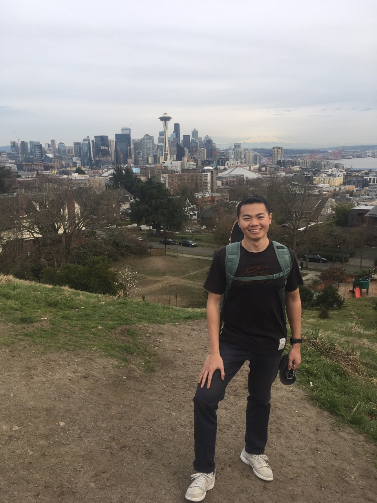
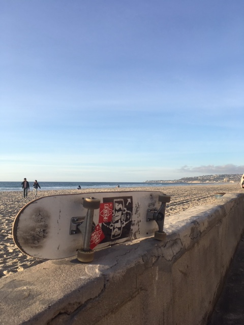
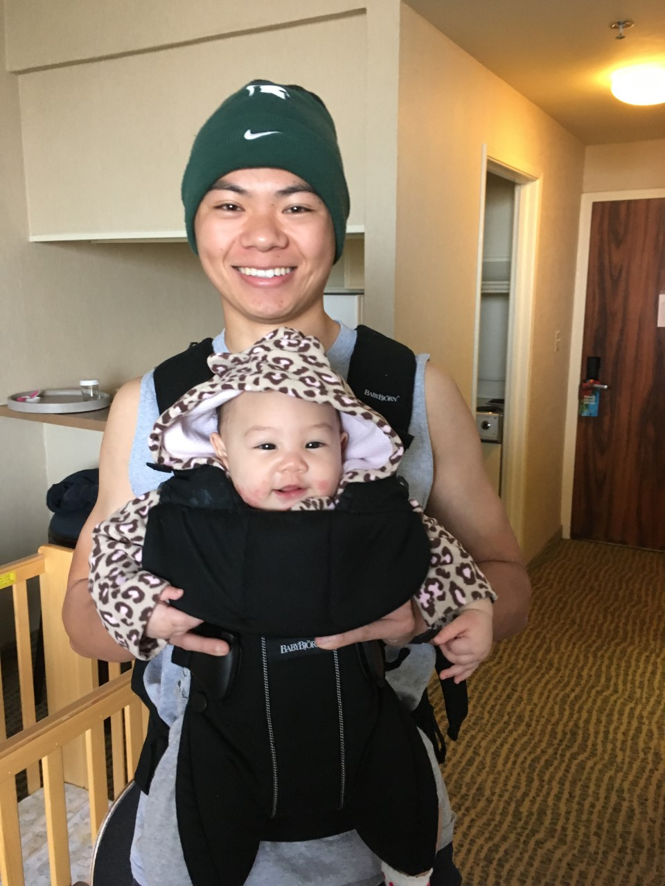

About Me
Hello! My name is David. I am a student at Code Fellows in Seattle, Washington. I choose Code Fellows because I enjoy coding, and I want to become a software developer. I grew up in a performing arts home in China. Although thousands of miles away, I've always felt a special connection to the city of Seattle. My dad is a voice actor; he did the voice over for Tom Hanks' character in the movie Sleepless in Seattle, that was the first time when the name of this beautiful city made its first apperance in my life. As a young boy in China, I also remember watching NBA legend Ray Allen sinking long arc shots in the green and yellow Supersonics uniform. I just knew I have to be there one day. After moving to America at 12, spenting 4 years in U.S. Navy after high school, 4 years at Michigan State University, here I am!
My Experience
After graduating high school in 2010, I enlisted in the U.S. Navy. I was an avionics technician in an F/A-18E Super Hornet fighter jet squdron, known as the "VFA-151 Vigilantes", in Naval Air Station Lemoore, California. I performed daily inspections, as well as maintaining various avionics equipment aboard the fighter jet. The Navy has brought me to some cool places! Here are some countries that I've been to while being deployed.
My Education
As soon as I received my honorable discharge from the Navy in 2014, I attended Michigan State University in East Lansing, Michigan. I was a student at MSU's Athletic Training Education Program, where I worked with elite Division I athletes. I had the opportunity to be a part of MSU's ice hockey team, gymnastics, swim and dive, as well as men's basketball. I graduated in May of 2018 with a B.S. in Athletic Training.
Fun Facts About Me!
- Skateboarding is my passion. I ride my board everywhere.
- I love Mexican food. There's nothing like grilling some carne asadas over charcoal.
- I am a big fan of hip-hop artist Drake.
- I enjoy getting to know different people and experiencing different cultures.
- I have a soft spot for really sour candies, like Sour Patch Kids.
- Sneakers catch my eye; I think it's cool that people express themselves through clothing, especially footwear. I have 5 pairs of sneakers.
- I've lived in Michigan, Florida, and California before moving to Washington.